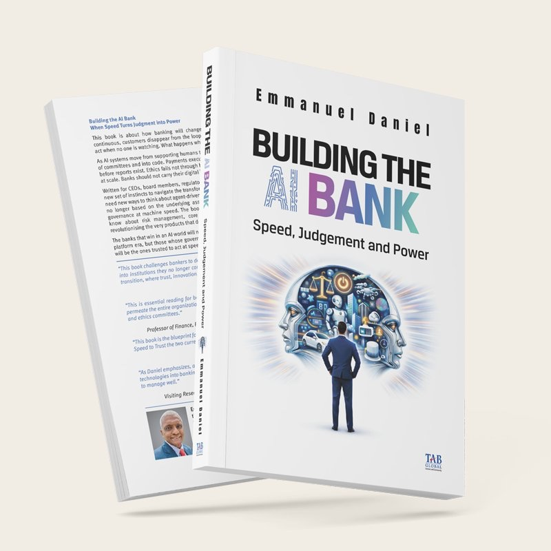

Available Now
Get Your Copy Today!
Order Building the AI Bank from your preferred retailer — available in print and digital formats worldwide.
New Release · Emmanuel Daniel
Speed · Judgment · Power
When AI systems move from supporting humans to replacing them, banking enters a new era where speed replaces deliberation, and judgment is encoded into algorithms. The banks that win will not be the smartest — they will be the ones trusted to act at speed, at scale, without breaking the world.

Order Building the AI Bank from your preferred retailer — available in print and digital formats worldwide.
Ten chapters tracing the full arc of AI's impact on banking — from machine-speed decisions to board-level governance and the ethics of autonomous finance.
The essential arguments that make Building the AI Bank required reading for every leader navigating the intersection of AI and financial institutions.
Endorsed by global banking leaders, regulators, and AI governance experts.
"This book challenges bankers to design deliberately for an AI-native future or risk drifting into institutions they no longer control. Essential reading where trust, innovation, and accountability must align at machine speed."

"This is essential reading for board members and treasury executives. Its themes should permeate the entire organization — from product development and marketing to compliance and ethics committees."
"This book is the blueprint for transformation — a guide to making Speed to Change and Speed to Trust the two currencies of the new bank."

"A critical issue for innovating institutions will be to interleave these technologies into banking without losing sight of the many risks that require deep judgment to manage well."
Written for practitioners who need to act — not just observe. If AI is reshaping your industry, your institution, or your career, this book is your operational guide.
Emmanuel's ongoing commentary on finance, geopolitics, travel and society — the ideas that feed the book and extend beyond it.


Future of Finance
2025 Was When the Financial Markets Hijacked the Networked EconomyDecember 26, 2025

Future of Finance
Who Better to Ask If the U.S. Will Move from Physical to Digital Dollars?May 26, 2025


Traveller's Tales
A Conversation in St Lucia on the People and Talent in the CaribbeanDecember 16, 2024


Footnotes
Russian-Ukraine War Will Trigger Transformational Changes in Finance IndustryApril 14, 2022


The Personalization of Finance is Here
This book outlines the transition that the finance industry will go through from its platform stage today into what Emmanuel Daniel calls the "Personalization of Finance". He uses the story of the ice trade to describe a level of personalization never seen before — a profound transformation in how institutions, markets, and societies will need to function in the network age.
"He introduces the term 'financialization of everything' to describe how digitization will transform entire economies, enhance their receptivity towards cryptocurrencies and blockchain, and how new trends such as gaming will shape the personalization of society."
Especially useful for founders, disruptors and policy makers in finance looking for original ideas on finance, economics, and society shaping the industry today.